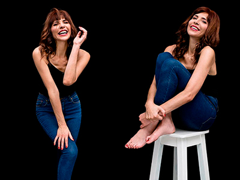
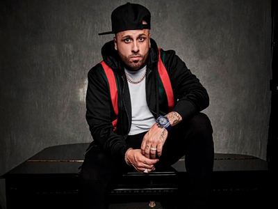

Actualidad

¡DE REGRESO A LA TV!
La bella actriz y cantante bogotana María Camila Porras regresó al país, luego de pasar una larga temporada en los Estados Unidos, donde estudio y presentó algunos castings. En esta temporada de año la veremos con un personaje muy fuerte en una nueva producción, La Gloria de Lucho del Canal Caracol y en su obra de teatro “Sin alas para volar”, donde encarna a una reclusa maltratadora, interpretación muy diferente a lo que en verdad es ella, pues continúa con su ayuda a las mujeres y hombres víctimas del maltrato al lado de su Fundación Mujeres Fénix.
VARIEL Y EL BARÓN
Tomado de @varielsanchez
Variel Sánchez está estrenando proyecto, nada más y nada menos que con TELEMUNDO; la producción El Barón, la cual cuenta con un elenco internacional muy selecto, actores como Francisco Angelini, María Elisa Camargo, Kornel Doman entre otros dan vida a personajes reales de los años 70 y la época marimbera en Colombia y Estados Unidos. Variel viajó como actor invitado a los Estados unidos para la promoción de la misma.
Adicional a esto, el bogotano y su esposa la también actriz Estefanía Godoy están esperando su tercer bebé, lo cual tiene a la pareja muy feliz. ¡Felicitaciones!
¡UN ACTOR CON GRAN CORAZÓN!
Julio Valencia, el antagonista de la película Somos Calentura, cinta donde el baile y la acción se relacionaban, es un hombre de muy buenos sentimientos y así lo demuestra apoyando junto a varios amigos una escuela de fútbol en Buenaventura llamada: Futuros del Pacífico donde enseñan valores y persistencia. Julio logró todos sus objetivos siendo el mejor en su arte que es el baile y hoy es una promesa de la actuación colombiana. Se ha destacado también por sus personajes de La esclava blanca, Tres Caínes, La boca del lobo y Pambelé.
¿CHUY LUVIANO SIN SUS RAYOS?
Tomado de @rayosdemexico
Juez ordena a Chuy Luviano abstenerse de utilizar la marca “Rayos de México”.
En medio de un pleito acalorado, los miembros de la agrupación Los Internacionales Rayos De México a través de su apoderado, el reconocido abogado Mauricio Maestrelograron que la Superintendencia de Industria y Comercio ordenara a Chuy Luviano“abstenerse de hacer uso del signo CHUY LUVIANO Y SUS RAYOS DE MÉXICO o cualquier otro idéntico o similar…”
Esta decisión se da en medio de una solicitud de medidas cautelares presentada por el abogado Mauricio Maestre, quien a su vez manifestó: “Es importante aclararle a la opinión pública que Los Internacionales Rayos De México es una marca registrada por la agrupación. Chuy Luviano fue su vocalista por un tiempo y después renunció para iniciar su carrera como solista. Es como si Celia Cruz, después de su salida de la reconocida Sonora Matancera, se anunciara con el nombre de la agrupación. Una cosa era la Sonora y otra muy distinta Celia.
Esta es una decisión que logra reivindicar los derechos de mis clientes en medio de toda una campaña de desprestigio y uso no autorizado de la marca “Los Internacionales Rayos De México”.

¡HASSAM RECIBE AMENAZAS!
Foto: Tomado de @ofcialhassam
El humorista afirma que no todos disfrutan de su humor, pues ha recibido diferentes amenazas de muerte a través de las redes sociales por lo que dice en sus rutinas, aunque el comediante habla del tema con frescura para tratar de aplacar tensiones, asegura que su esposa le pide que no responda a las amenazas, pero él no está dispuesto a callar. Su salida de Caracol se debió a que censuraban sus rutinas.
¡ENDRY CARDEÑO PONE EN RIESGO SU SALUD!
Foto: Tomado de @endrystar1
Un procedimiento estético para aumentar el tamaño de su cola le jugó una mala pasada a la actriz transgénero, pues no salió como lo planeaba y puso en riesgo su salud. El procedimiento fue practicado en una clínica de garaje donde le inyectaron aceite de avión y no la silicona líquida que se utiliza en este tratamiento.
Cardeño no pretende victimizarse, pues es consciente de su decisión aunque fue tomada desde la ignorancia, asegura que esta sustancia se ha desplazado por las parte íntimas de su cuerpo y está generando cambios notables, dijo la actriz al programa “Lo sé todo” de Canal Uno.
Esperamos que se recupere pronto.

NUEVAMENTE SOMETIDA A CIRUGÍA
Foto: Tomado de @lorenameritanoofcial
La actriz Lorena Meritano,quien enfrentó un duro proceso de cáncer, reveló el resultado positivo de su más reciente cirugía debido a la presencia de una masa encontrada en su brazo, este nuevo evento prendió las alarmas, afortunadamente no se trataba de nada maligno y los doctores pudieron retirar lo que tenía, por lo tanto tiene muchos motivos para celebrar.
“Salí de mi cirugía y todo salió perfecto, sacaron lo que tenían que sacar del brazo y no vieron nada malo, gracias a Dios. Gracias por sus oraciones.”
RECONOCIDA ACTRIZ COLOMBIANA YA NO SE CASA?
Foto: Tomado de @carosepulvedaf
La talentosa actriz Carolina Sepúlveda quien le dio vida al personaje Ximena en -Sin Tetas Si Hay Paraíso-, aclaró lo que realmente ocurrió meses antes de su boda. Los rumores aseguraban que ya no habría matrimonio con su actual pareja Juan David Mejía, con quien mantiene una relación desde hace 5 años, lo cierto es que se encuentran felices así lo demuestran en sus redes sociales con diferentes fotografías compartiendo las pasadas festas navideñas, y el aplazamiento de la boda se debe a compromisos laborales que les ha impedido hacer el compromiso real.
¡Pronto elegirán nueva fecha!
¡NO SABEMOS QUE PENSAR!
Foto: Tomado de @soyjuangabriel
Los rumores acerca de la reaparición de Juan Gabriel, siguen siendo tendencia desde que su ex-mánager dijo que el cantante seguía vivo. Esta vez afirma que el famoso está grave de salud, hasta el punto vomitar sangre “tiene tos, vomitó sangre, tiene anginas, fiebre y lleva tres días en cama” fueron algunas de las declaraciones del ex-manager refiriendose al cantautor mexicano.
Desde que su muerte fue “fingida”, siguen en contacto hasta el punto de hablar todos los días, pues el ex-manager desea colaborarle en lo que necesite y cuidar del artista.
¿Serán reales estas declaraciones? ¡ya veremos!
¡PADRES POR SEGUNDA VEZ!
Foto: Tomado de @ yulyferreira
Nació el hijo de Fabián Ríos y Yuly Ferreira convirtiéndolos en padres por segunda vez; el nombre elegido para el nuevo integrante de la familia es David, la pareja le dio la bienvenida a su bebé el pasado 16 de enero. “Nació Varón” se puede leer en el instagram de Fabián quien documento todo el proceso junto a un hermoso mensaje para su esposa agradeciéndole por su valentía.
¡Felicitaciones!

¡NICKY JAM IMPARABLE!
Foto: Tomado de @nickyjampr
El cantante sigue dando grandes pasos en el mundo de la actuación, después de protagonizar la serie de su vida El Ganador (Netflix), el reggaetonero se unirá a la exitosa producción Bad Boys, para la secuela que también protagonizaran Will Smith y Martin Lawrence, bajo el título de Bad Boys for Life. Nicky, quien interpretará a uno de los villanos en el film, se une al nuevo elenco, que incluye talentos como Vanessa Hudgens, DJ Khaled, Paola Núñez, Alexander Ludwig, Charles Melton y Jacob Scipio.
¡RIHANNA DEMANDÓ A SU PADRE!
Foto: Tomado de @badgalriri
El padre de la cantante ha sido acusado por su hija, de utilizar su apellido para lucrarse y aprovechar la conexión con la artista para llevar a cabo prácticas fraudulentas a través de la compañía Fenty Entertainment. A pesar de la relación parental, los abogados de la cantante afirman que su padre nunca ha ejercido labores de representación y tampoco está autorizado para hablar en su nombre o cerrar acuerdos de trabajo.
Sin embargo la demanda no surtió efecto ya que la compañía cerró dos acuerdos por 15 millones de dólares sin el permiso de la cantante.
Esperamos que se solucione en los mejores términos.

¡INTERNA EN UNA CLÍNICA!
Foto: Tomado de @parisjackson
La modelo Paris Jackson habría ingresado por decisión propia a una clínica de salud mental para concentrarse en su estado físico y emocional, reveló una fuente a Entertainment Tonight. El ingreso de la hija del difunto cantante
Michael Jackson se da después de un agotador calendario de trabajo y viajes que realizóParís en los meses anteriores. Tras la estancia en el centro de salud mental, la modelo espera “salir revitalizada y lista para abordar los nuevos y emocionantes
proyectos que le esperan”.
SPICE GIRLS INICIARÁN GIRA, AÚN BUSCAN SU QUINTA INTEGRANTE
Foto: Tomado de @lgjhx
Al parecer, las Spice Girls habrían encontrado a la sustituta de Victoria Beckham para esta nueva gira, parece que Saara Aalto, una cantante pop finlandesa, ha sido invitada por Mel C para unirse a la mítica banda británica. Aún por confirmar, se abre una gran incógnita más sobre estas actuaciones que nos tienen en vilo y es que la misma Mel B, sin confirmar, dijo que sería genial contar con artistas como Adele, Taylor Swift o Katy Perry junto a las otras cuatro artistas en esta mini gira de las Spice Girls.
¡Nuestra ansiedad crece!
¡Pronto elegirán nueva fecha!
INCREIBLE ACTUACIÓN EN LOS GRAMMYS
Foto: Tomado de @iamcardib Y @ camila_cabello
Cardi B y Camila Cabello, actuarón en la edición 61 de los Grammy que se celebró el pasado 10 de febrero en Los Ángeles, Estados Unidos. La rapera Cardi B fué una de las grandes protagonistas de la velada, llevandose el premio a Mejor álbum de rap; por su parte la interprete de Havana, Camila Cabello abrió la gala acompañada de Ricky Martín Y J Balvin que aunque no se llevo ninguno de los premios a los que estabá nominada su show deslumbro a todos los asistentes.